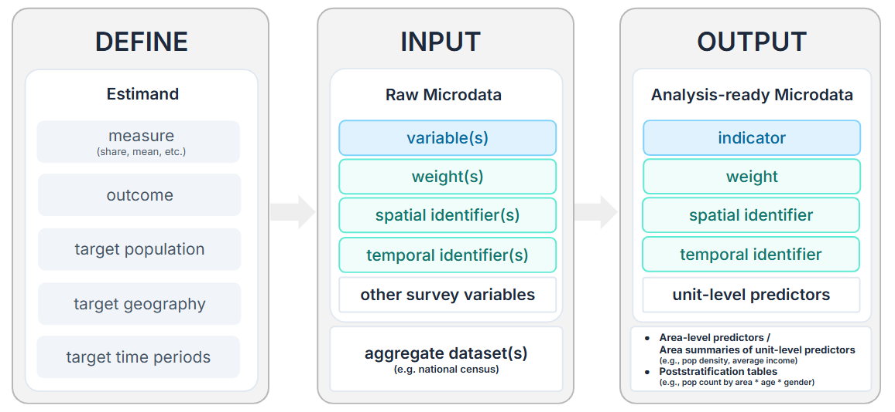
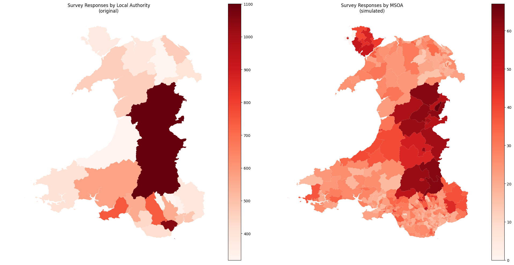

Raw survey microdata is transformed into analysis-ready inputs by defining the estimand, coding the indicator from the survey variables, aligning it with the estimation geography, and choosing compatible survey weights.
The data preparation pipeline can be summarised as follows:

Preparation pipeline for analysis-ready inputs
1 Understanding the Tutorial Dataset
The tutorial uses a simulated dataset based on the National Survey for Wales 2022-23, a cross-sectional survey conducted annually to provide a snapshot of the Welsh population. The original survey covers topics including health, education, climate change, visits to the outdoors, public service satisfaction, material deprivation, internet access, and the Welsh language.
Note
In the original NSW dataset, obtained via UK Data Service, the Local Authority (LA) is the sole spatial identifier and the survey’s sampling stratification variable. To both ensure data privacy and create a more granular spatial identifier for tutorial purposes, the example simulated dataset was created using:
Stratified randomisation: survey responses were first split by Local Authority and their variables were randomised column-wise to preserve totals by Local Authority.
Randomised upsampling: survey responses were assigned a random MSOA that intersects with their recorded Local Authority to simulate a higher-resolution dataset for tutorial purposes.

2 Define the Estimands
The estimand determines how survey microdata inputs are prepared and how to choose the most appropriate estimation approach downstream.
The composition of a well-formed estimand is:
Estimate the measure of what outcome, among which population, across which geography.
Examples include:
Share of adults who use the train weekly by MSOA.
Mean leisure travel distance among retirees by ward.
2.1 Estimation Geography
In SAE, the groups or areas being estimated are often called domains. In spatial applications, they are better understood as estimation areas. An estimation area is one unit in the chosen estimation geography, such as a Local Authority, ward, LSOA, or MSOA.
Census Geography hierarchy going from Country to LA to MSOA to LSOA to OA (Source)
The chosen estimation geography must match the level of spatial detail available in the survey data. If respondents are identified only by Local Authority, then Local Authority is the finest geography that can be used for small-area estimation. SAE methods are not intended to upsample survey data to a more granular spatial resolution.
2.2 Measure and Outcome
Based on the estimand, identify or create the survey indicator that represents the outcome. Some indicators are direct recodes of one survey question; others need to combine several variables. The same raw survey variable can support different estimands.
Indicator type
What to define
Example
Binary
What is 1, 0, missing, and out of scope
Share of adults who use the train weekly
Continuous
The numeric value and unit
Mean leisure travel distance in miles
The most common choices of measure, i.e. how outcome indicators are aggregated, are:
share;
mean;
rate in population;
count or total.
3 Weights and Domain Sizes
Survey weights connect the sample back to the population. The survey user guide is the go-to resource for understanding which weight variables are available, what they adjust for, and which survey modules or questions they apply to.
For SAE, the weight used must match the estimand unit, target population, and survey design. It is also important to distinguish the scale of the weight variable:
Analysis weights\(w^{A}\) make means or proportions representative of the target population. These weights are most common for estimating shares or means.
An analysis weight of 0.5 means this obs counts as half a person in the weighted average.
Grossing weights\(w^{G}\) are scaled so that they sum to a known population total within the relevant estimation areas. They are usually required for counts or rates.
A grossing weight of 50 means this obs represents about 50 people in the population.
In SAE, domain size\(N_d\) defines the size of the target population in each estimation area. For example, if the estimation geography is MSOA and the target population is adults aged 16+, then \(N_d\) is the number of adults aged 16+ in each MSOA.
Tip
If analysis weights are provided and the relevant domain sizes are known, they can be rescaled into grossing weights for each survey respondent:
where \(w^A_{di}\) is the analysis weight for sampled unit \(i\) in domain \(d\), \(w^G_{di}\) is the corresponding grossing weight, and \(N_d\) is that domain’s size.
4 Practical Tutorial
For this tutorial, we follow the process of performing area-level SAE for these three estimands at MSOA level using the simulated NSW data:
mean commute distance among commuters,
share of recent bus riders who are dissatisfied with bus services, and
number of frequent walkers per 1,000 residents.
These estimands were formulated to ensure clarity with regards to the how, what, who, and where necessary for the workflow.
Est. #
Measure
Outcome
Target population
Estimation geography
1
Mean
Commute distance
Commuters
MSOAs in Wales
2
Share
Dissatisfaction with bus services
Adults who rode a bus in the last 12 months
MSOAs in Wales
3
Rate
Walking as main transport daily per 1,000 residents
All residents
MSOAs in Wales
They in turn determine how we construct the indicators from the survey microdata and what weight variables we need for each.
Est. #
Indicator
Coding rule
Measure
Estimation geography
Weight variable
1
commute_distance
[TravWkDist] Numeric commute distance in miles; non-commuters are coded NA
Mean
MSOA
SampleAdultWeight, analysis weight
2
bus_nosat
[BusOverSat, Bus12M] Binary: 1 if rode a bus in the last 12 months and is fairly or very dissatisfied; 0 if rode a bus in the last 12 months and is not dissatisfied; NA otherwise
Share
MSOA
SampleAdultWeight, analysis weight
3
freq_walker
[AtFrqWlk10] Binary: 1 if walking for transport daily
Rate per 1,000
MSOA
SampleTravelWeight, analysis weight
Code
library(dplyr)library(readr)library(stringr)library(ggplot2)# Download the simulated survey microdata into a temp filesurvey_file <-file.path(tempdir(), "nsw_2223_msoa_la.csv")survey_url <-"https://raw.githubusercontent.com/shaunhoang/tutorial-site/main/data/nsw_2223_msoa_la.csv"download.file(survey_url, survey_file, mode ="wb")
4.1 Load Survey Data
Load the survey dataset and identify the unique respondent identifier. The simulated survey microdata provides two spatial identifiers: Local Authority and MSOA of residence. The three estimands are estimated at MSOA level, while Local Authority remains useful as the survey stratification variable.
For each indicator, check whether there are areas with no usable observations or very few usable observations.
Code
survey_inputs <- survey_spatial_ids |>left_join(survey_indicators, by ="unit_id") |>left_join(survey_weights, by ="unit_id")commute_counts <- survey_inputs |>filter(!is.na(commute_distance), !is.na(SampleAdultWeight)) |>count(domain_id = msoa_code, name ="non_missing") |>mutate(indicator ="commute_distance")bus_counts <- survey_inputs |>filter(!is.na(bus_nosat), !is.na(SampleAdultWeight)) |>count(domain_id = msoa_code, name ="non_missing") |>mutate(indicator ="bus_nosat")walker_counts <- survey_inputs |>filter(!is.na(freq_walker), !is.na(SampleTravelWeight)) |>count(domain_id = msoa_code, name ="non_missing") |>mutate(indicator ="freq_walker")indicator_area_counts <-bind_rows( commute_counts, bus_counts, walker_counts)ggplot(indicator_area_counts, aes(x = non_missing)) +geom_histogram(binwidth =5, boundary =0, fill ="#4C78A8", colour ="white") +facet_wrap(~ indicator, scales ="free_y") +labs(x ="Usable observations per MSOA",y ="Number of MSOAs" ) +theme_minimal()
The active-travel question used to construct freq_walker was asked to a subsample, so this estimand has more low-sample areas and will likely benefit most from model-based estimation.